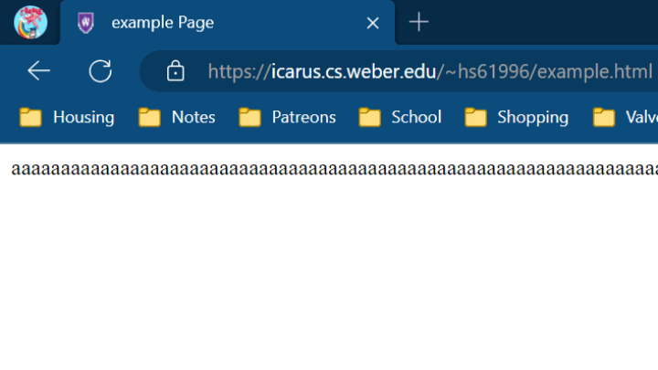

The Heavy Weapons Guy

Learn about Mikhail, the tank and poster child of the Reliable Excavation Demolition (RED) Team and the game Team Fortress 2 as a whole!
Publishing a webpage using Icarus
Learn how to publish a webpage on Icarus and make your glorious websites public and known to the world!
Styling a webpage using a CSS Stylesheet

Learn how to add style to your webpages using a CSS Stylesheet!
Creating a MadLibs-style story
Make a fun and silly story about going on a vacation!